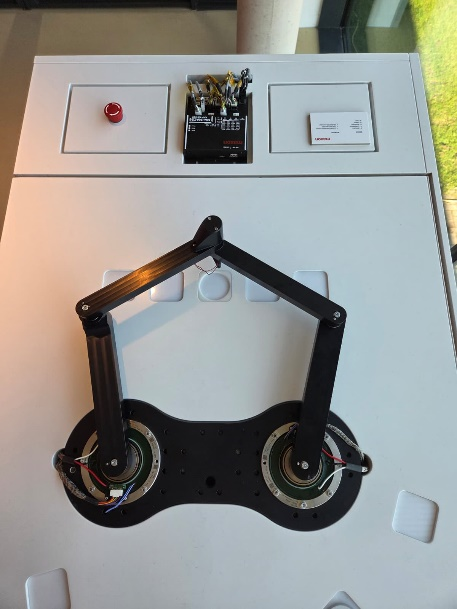
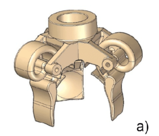
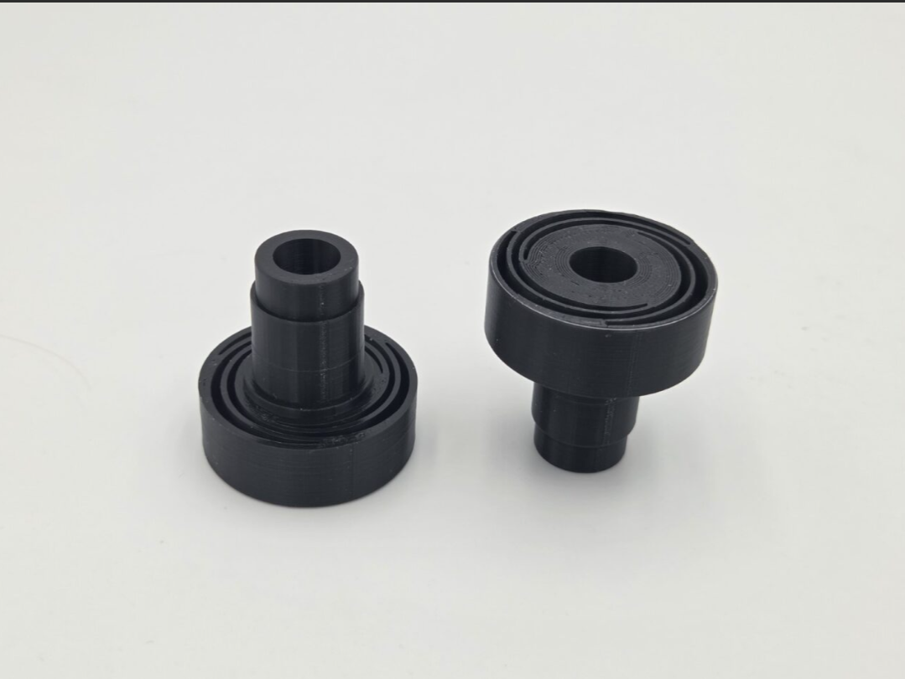
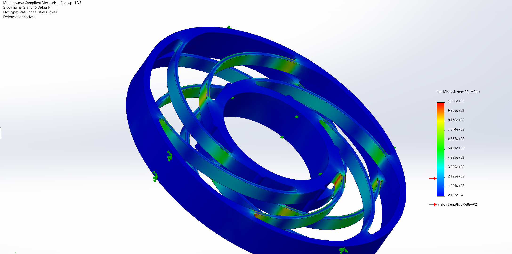
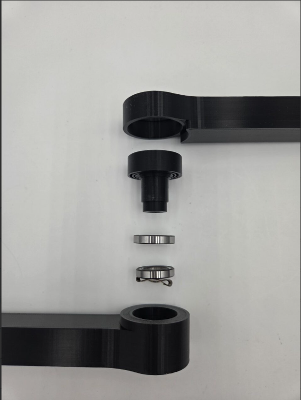
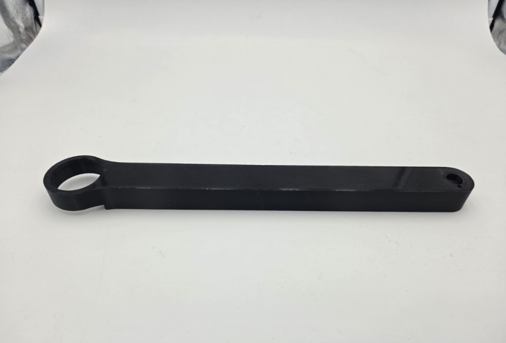

SCARA Robot Redesign
Internship at maxon Benelux redesigning a dual-axis parallel SCARA demonstrator: a compliant mechanism and redesigned distal arms fixed an unstable flipping motion, cutting the demo cycle to about 24 seconds and preparing the Z-axis for a future maxon-driven end-effector.
Background
maxon is a global manufacturer of high-precision drive systems - motors, gearheads and controllers used in medical technology, aerospace and industrial automation. To showcase its mechatronic capability for the growing semiconductor market, maxon built a dual-axis parallel SCARA robot (Selective Compliance Assembly Robot Arm) as a trade-fair demonstrator.
The demonstrator is driven by two frameless DT85M motors, each moving a proximal and a distal arm of equal length, controlled by a MiniMACS6 master controller. It was recently fitted with an end-effector consisting of a stepper-driven Z-axis and an electromagnetic gripper. During my internship at maxon Benelux I was tasked with redesigning this demonstrator.

Trade-fair demonstrator

Dual-axis parallel arm
Problem & Objectives
Although the demonstrator was technically functional, several limitations reduced its impact as a showcase:
- The flipping motion (moving from one side to the other) was slow and inefficient, requiring two separate motor movements and increasing cycle time.
- There was insufficient space in the end-effector axis to integrate a future maxon-driven end-effector.
- The stepper-driven Z-axis lacked the desired performance.
- The MiniMACS6 controller offered no trajectory planning or high-rate feedback and could not exploit the high-resolution encoders, leading to poor tuning and reduced accuracy.
The project therefore had three objectives: achieve a stable and fast flipping motion, make the system ready for a future maxon-driven end-effector, and implement a new master controller with higher bandwidth and advanced trajectory planning. In scope was the redesign of the arms and Z-axis, controller selection, and a validated prototype; the end-effector itself and commercial scaling were out of scope.
Approach
I followed a requirement-driven engineering process based on the V-model, keeping every design decision traceable back to a requirement: research and analysis of the existing system, functional design with morphological charts and decision matrices, technical design (geometry, materials, tolerances, components), and finally prototype realization and validation against the Critical-to-Quality (CTQ) requirements.
Functional Design: fixing the flip
The core functional problem was the instability of the flipping motion. Its origin is kinematic: near the transition the parallel arm passes through an over-centre configuration where small differences in friction, clearance and compliance decide which way the arm snaps, making the flip unpredictable and slow.
Instead of fighting the tolerances, I introduced controlled compliance. The chosen solution redesigns the distal arms and adds a compliant mechanism that absorbs the over-centre lock-up and compensates for tolerance build-up, while a redesigned Z-axis structure frees up space for the future end-effector.

End-effector axis concept

Printed compliant mechanism
Technical Design & Prototype
The compliant axis was verified with a structural (FEM) simulation for deformation and stress before manufacturing. Components were selected to match the CTQ requirements, including deep-groove ball bearings (NSK 6802ZZ and SKF 61803) and a Smalley wave spring to set the axial preload. The realized prototype integrates the redesigned distal arms, the compliant mechanism and the reworked Z-axis, providing roughly 2 mm of translational adjustment (requirement: at least 1 mm) and an inner bore of at least 10 mm for end-effector pass-through, all within maxon's volume envelope.

FEM stress simulation

Distal arm assembly

Redesigned distal arm
Validation & Results
- The complete demonstrator sequence was reduced to approximately 24 seconds, inside the 19-25 second target range.
- The compliant mechanism delivered the required translational adjustment and tolerance compensation.
- All components fit within maxon's volume claim, and the Z-axis is ready for a future maxon-driven end-effector.
- Noise behaviour improved qualitatively compared with the previous configuration.
The intended new master controller could not be implemented within the available time and after a hardware failure of the existing controller. The MiniMACS6 was retained, and I adapted the control software to reliably demonstrate an outward flipping motion in joint mode, working around the limitations of the built-in DualScara kinematics.
Reflection
This internship pushed my analytical and decision-making skills: reasoning about kinematics, singularities and tolerance stack-up to explain why the flip was unstable, then choosing compliance as the solution. It also taught me to plan realistically and respond to scope changes - when the controller could not be replaced, I re-focused on delivering a reliable mechanical prototype and a working demonstration. Finally, it gave me experience with stakeholder expectations, documentation and engineering in a corporate environment.